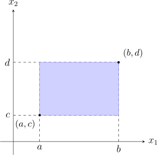

1.1 Preliminaries
In mathematical statistics we constantly form new random variables from old ones. If \(X_1, X_2, \dots , X_n\) is a sample, the sample mean \(\bar {X} = \frac {1}{n}\sum X_i\), the largest observation, and the ratio of two sample variances are all functions of the sample, and their distributions are what estimators and tests are built on. This chapter develops the methods for finding such distributions. This section collects the facts about single and joint distributions that the methods use.
1.1.1 Probability Mass and Density Functions
Definition 1.1.1. A random variable \(X\) is discrete if it takes values in a countable set \(\{x_1, x_2,\dots \}\). Its probability function (p.f.) is \(f_X(x;\theta ) = P(X = x)\), which satisfies \[f_X(x;\theta ) \geq 0 \qquad \text {and}\qquad \sum _{i} f_X(x_i;\theta ) = 1 .\] A random variable \(X\) is continuous if there is a function \(f_X(x;\theta )\), its probability density function (p.d.f.), with \[f_X(x;\theta ) \geq 0 ,\qquad \int _{-\infty }^{\infty } f_X(x;\theta )\, dx = 1 ,\qquad P(a\leq X\leq b) = \int _a^b f_X(x;\theta )\,dx .\]
Here \(\theta \) denotes the parameters of the distribution, written when they matter and omitted otherwise. For a continuous variable every single point has probability zero, \(P(X = a) = 0\), so whether the end points of an interval are included makes no difference.
1.1.2 The Cumulative Distribution Function (CDF)
Definition 1.1.2. The cumulative distribution function of any random variable \(X\) is \[F_X(x) = P(X \leq x),\qquad -\infty <x<\infty .\]
Theorem 1.1.3. Every c.d.f. has the following properties.
- 1.
- Monotonicity: if \(a < b\), then \(F_X(a) \leq F_X(b)\).
- 2.
- Limits: \(\lim _{x\to -\infty }F_X(x) = 0\) and \(\lim _{x\to \infty }F_X(x) = 1\).
- 3.
- Right-continuity: \(\lim _{h \to 0^+} F_X(x+h) = F_X(x)\).
Proof. For \(a<b\) the event \(\{X\leq a\}\) is contained in \(\{X\leq b\}\), which gives 1. The events \(\{X\leq -n\}\) decrease to the empty set and \(\{X\leq n\}\) increase to the whole sample space as \(n\to \infty \), so by continuity of probability their probabilities tend to \(0\) and \(1\), which with monotonicity gives 2. Likewise the events \(\left \{X\leq x + \frac 1n\right \}\) decrease to \(\{X\leq x\}\), giving 3. □
The c.d.f. is the one description that serves discrete and continuous variables alike. For a discrete variable it is a step function, jumping by \(P(X = x_i)\) at each \(x_i\); for a continuous variable it is continuous, with \(f_X(x) = F_X'(x)\) wherever the derivative exists.
1.1.3 The Moment Generating Function (MGF)
Definition 1.1.4. The moment generating function of \(X\) is \[M_X(t) = E\left (e^{tX}\right ),\] provided this expectation is finite for all \(t\) in some interval \(-h<t<h\).
Theorem 1.1.5. If the m.g.f. of \(X\) exists, then
- 1.
- for every \(m = 1,2,\dots \), \(E(X^m) = M_X^{(m)}(0)\), the \(m\)th derivative at \(t = 0\);
- 2.
- it determines the distribution: two random variables whose m.g.f.s agree on an interval about \(0\) have the same distribution;
- 3.
- \(M_{aX + b}(t) = e^{bt}M_X(at)\) for constants \(a\) and \(b\).
Proof. For 1, expand \(e^{tX} = \sum _m \frac {t^mX^m}{m!}\) and take expectations term by term, which the existence of the m.g.f. justifies: \(M_X(t) = \sum _m E(X^m)\frac {t^m}{m!}\), a power series whose \(m\)th derivative at \(0\) is \(E(X^m)\). Property 3 is \(E\left (e^{t(aX + b)}\right ) = e^{bt}E\left (e^{(at)X}\right )\). Property 2, the uniqueness theorem, is the inversion theorem for Laplace transforms and is quoted without proof. □
Example 1.1.6. Find the m.g.f. of \(X\sim N(\mu ,\sigma ^2)\), and use it to find \(E(X)\) and \(\text {Var}(X)\).
Solution. For \(Z\sim N(0,1)\), completing the square in the exponent, \[M_Z(t) = \int _{-\infty }^\infty e^{tz}\frac {e^{-z^2/2}}{\sqrt {2\pi }}\,dz = e^{t^2/2}\int _{-\infty }^\infty \frac {e^{-(z - t)^2/2}}{\sqrt {2\pi }}\,dz = e^{t^2/2} .\] Since \(X = \mu + \sigma Z\), property 3 gives \(M_X(t) = e^{\mu t}M_Z(\sigma t) = e^{\mu t + \sigma ^2t^2/2}\). Then \(M_X'(t) = (\mu + \sigma ^2t)M_X(t)\), so \(E(X) = M_X'(0) = \mu \), and \(M_X''(t) = \left [\sigma ^2 + (\mu + \sigma ^2t)^2\right ]M_X(t)\), so \(E(X^2) = \sigma ^2 + \mu ^2\) and \(\text {Var}(X) = \sigma ^2\).
1.1.4 Multivariate Distributions and Independence
When dealing with functions of several variables we work with random vectors \(\mathbf {X} = (X_1, X_2, \dots , X_k)^{\mathsf T}\).
Definition 1.1.7. If \(X_1,X_2,\dots ,X_k\) are discrete random variables, their joint probability function is \[f(x_1,x_2,\dots ,x_k) = P(X_1=x_1,\ X_2=x_2,\ \dots ,\ X_k=x_k),\] which is non-negative and satisfies \(\sum _{x_1}\cdots \sum _{x_k} f(x_1,\dots , x_k) = 1\).
Definition 1.1.8. The random variables \(X_1,X_2,\dots ,X_k\) are jointly continuous with joint p.d.f. \(f(x_1,x_2,\dots ,x_k)\) if
- 1.
- \(f(x_1,\dots ,x_k)\geq 0\) for all \((x_1, \dots , x_k)\);
- 2.
- \(\int _{-\infty }^\infty \cdots \int _{-\infty }^\infty f(x_1,\dots ,x_k)\,dx_k \cdots dx_1 = 1\);
and then \(P(\mathbf X\in A) = \int \cdots \int _A f(x_1,\dots ,x_k)\,dx_k\cdots dx_1\) for every region \(A\).
The marginal p.f. or p.d.f. of one variable is obtained by summing or integrating the joint function over all the others; for example \(f_{X_1}(x_1) = \int _{-\infty }^\infty f(x_1,x_2)\,dx_2\) in the bivariate case.
Definition 1.1.9. The random variables \(X_1,X_2,\dots ,X_k\) (discrete or continuous) are independent if and only if \[f(x_1,x_2,\dots ,x_k) = f_{X_1}(x_1)\, f_{X_2}(x_2)\cdots f_{X_k}(x_k) = \prod ^k_{j=1} f_{X_j} (x_j) ,\] for all \((x_1,\dots ,x_k)\), where \(f_{X_j}\) is the marginal p.f. or p.d.f. of \(X_j\).
A practical consequence, used repeatedly below, is the factorisation criterion: two jointly continuous variables are independent if and only if their joint p.d.f. can be written as \(g(x)h(y)\) on a support that is a product set \(A\times B\) (a “rectangle”), the factors then being proportional to the marginals. A support such as \(0<x<y<1\) is not a product set, and variables with such a support are never independent.
Example 1.1.10. Let \(f(x,y) = 6x\) for \(0<x<y<1\). Find the marginal p.d.f.s and decide whether \(X\) and \(Y\) are independent.
Solution. For \(0<x<1\), \(f_X(x) = \int _x^16x\,dy = 6x(1 - x)\), and for \(0<y<1\), \(f_Y(y) = \int _0^y6x\,dx = 3y^2\). Their product \(18x(1 - x)y^2\) is not \(f(x,y)\), and indeed the support is not a product set, so \(X\) and \(Y\) are dependent.
1.1.5 Joint Moment Generating Functions
The joint m.g.f. handles several variables at once, and in particular sums of independent variables.
Definition 1.1.11. The joint moment generating function of \(X_1, X_2 , \dots ,X_k\) is \[M_{\mathbf X}(\mathbf t) = M(t_1,\dots ,t_k) = E\left (e^{t_1X_1 + \cdots + t_kX_k}\right ) = E\left (e^{\mathbf t^{\mathsf T}\mathbf X}\right ),\] when it exists for all \(\mathbf t\) in a neighbourhood of \(\mathbf 0\).
Theorem 1.1.12. The random variables \(X_1,X_2,\dots ,X_k\) are independent if and only if their joint m.g.f. is the product of the marginal m.g.f.s, \[M(t_1,\dots , t_k) = M_{X_1}(t_1)\cdots M_{X_k}(t_k) = \prod ^k_{j=1} M_{X_j}(t_j).\]
Proof. If the variables are independent, the expectation of a product of functions of separate variables factorises, so \(E\left (\prod _je^{t_jX_j}\right ) = \prod _jE\left (e^{t_jX_j}\right )\). Conversely, the product of the marginal m.g.f.s is the joint m.g.f. of independent variables with those marginals, and by the uniqueness theorem for joint m.g.f.s the joint distribution is that one. □
Setting all but one \(t_j\) to zero gives the marginal m.g.f.s, \(M_{X_1}(t_1) = M(t_1,0,\dots ,0)\), and the mixed moments come from mixed partial derivatives, for example \(E(X_1X_2) = \frac {\partial ^2 M}{\partial t_1\partial t_2}(\mathbf 0)\).
Example 1.1.13. Let \(f(x,y) = e^{-y}\) for \(0<x<y<\infty \). Find the joint m.g.f., and use it to find \(E(X)\), \(E(Y)\) and \(\text {Cov}(X,Y)\).
Solution. For \(t_1 + t_2<1\) and \(t_2<1\), \[M(t_1,t_2) = \int _0^\infty \int _x^\infty e^{t_1x + t_2y}e^{-y}\,dy\,dx = \int _0^\infty e^{t_1x}\frac {e^{-(1 - t_2)x}}{1 - t_2}\,dx = \frac {1}{(1 - t_2)(1 - t_1 - t_2)} .\] Then \(M(t,0) = \frac {1}{1 - t}\), so \(X\) is exponential with mean \(1\), and \(M(0,t) = \frac {1}{(1 - t)^2}\), so \(Y\sim \text {GAM}(2,1)\) with \(E(Y) = 2\). Differentiating, \(\frac {\partial ^2M}{\partial t_1\partial t_2}(0,0) = 3\), so \(E(XY) = 3\) and \(\text {Cov}(X,Y) = 3 - 1\cdot 2 = 1\). The m.g.f. does not factorise, so \(X\) and \(Y\) are dependent.
1.1.6 Properties of the Bivariate CDF
The joint c.d.f. of \((X_1,X_2)\) is \(F(x_1,x_2) = P(X_1\leq x_1,\ X_2\leq x_2)\). The probability that \((X_1, X_2)\) falls in a rectangle \((a,b] \times (c,d]\) is found from its values at the four corners by inclusion and exclusion: \[ P(a < X_1 \leq b,\ c < X_2 \leq d) = F(b,d) - F(b,c) - F(a,d) + F(a,c).\]

The term \(F(b,d)\) counts the whole quadrant below and to the left of \((b,d)\); subtracting \(F(b,c)\) and \(F(a,d)\) removes the two strips outside the rectangle, but removes the quadrant below and to the left of \((a,c)\) twice, so \(F(a,c)\) is added back. In particular, a function can be a joint c.d.f. only if this combination is non-negative for every rectangle. For jointly continuous variables, \(f(x_1,x_2) = \frac {\partial ^2F}{\partial x_1\partial x_2}\).
Example 1.1.14. Let \(F(x,y) = (1 - e^{-x})(1 - e^{-2y})\) for \(x,y>0\). Find \(P(1<X\leq 2,\ 0<Y\leq 1)\) and the joint p.d.f.
Solution. Since \(F(x,0) = F(0,y) = 0\), \begin {align*} P &= F(2,1) - F(2,0) - F(1,1) + F(1,0)\\ &= (1 - e^{-2})(1 - e^{-2}) - (1 - e^{-1})(1 - e^{-2})\\ &= (e^{-1} - e^{-2})(1 - e^{-2})\approx 0.201 . \end {align*}
Differentiating, \(f(x,y) = e^{-x}\cdot 2e^{-2y}\): \(X\) and \(Y\) are independent exponential variables with means \(1\) and \(\frac 12\).
Questions on this section
Stuck on something here? Ask below and it stays attached to this topic.